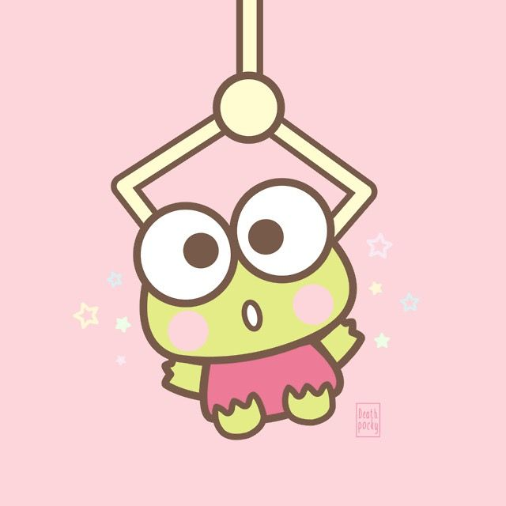

Meet Keroppi, the charming frog from Sanrio's beloved lineup of characters! With his bright green skin, cheerful demeanor, and signature red and white striped shirt, Keroppi is a delightful character who embodies the spirit of fun and friendship. Hailing from the charming village of Donut Pond, Keroppi spends his days enjoying the simple pleasures of life, from hopping around with his friends to exploring the great outdoors. Whether he's participating in local festivities or embarking on new adventures, Keroppi's positivity and enthusiasm are sure to bring a smile to your face. Join Keroppi and his friends as they make each day a little more joyful and a lot more colorful!
